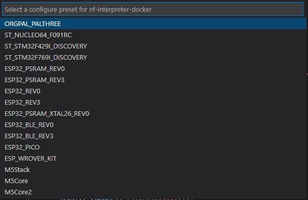

Using Dev Container to build targets
Dev Container is a way to use VS Code with a separated container. This allows to work on a separated environment than your normal Windows/Linux/Mac. This has the advantage of being isolated from the application installed, so you don't have to "pollute" your own environment with tools you may not need for other purpose. The other advantage is the ability to be pre setup, build at first request, pulling all the needed tools, repository, documents and settings that you'll need in your development.
We offer the possibility to use such a Dev Container to build any of the supported target in a very simple and straight forward way.
Requirements
- Step 0: Make sure your have cloned nf-interpreter nanoFramework directory. The stable branch is
develop. - Step 1: Make sure you have VS Code installed.
- Step 2: Make sure you have Docker Desktop installed.
- Step 3: Optional but strongly recommended for performance reasons: activate Windows Subsystem for Linux 2 on your Windows host machine.
note: that may require a reboot
- Step 4: Check Docker configuration and make sure you are signed in. In the bellow picture, the top right corner should have you Docker account. If you are not signed in, you'll get an error. And if you're using WSL2 (recommended), the checkbox for the WSL2 support should be checked.

- Step 5: Make sure you have the Remote - Containers extension installed.
- Step 6: copy the file in
.\vscode\cmake-variants-DEVCONTAINER.jsonto.\vscode\cmake-variants.json - Step 7: Open the full
nf-interpreterdirectory with VS Code. - Step 8: Once prompted or thru the menu, open the dev container.
This is illustrating how to do this:

note: in our case, the dev container is called
nanoFramework.
- Step 9: At that point, like in the previous illustration, when clicking on the logs, you should see activities. Be patient. Yes, super patient.
- Step 10: We told you to be patient, go for a tea, or a coffee. This part is resource intensive, most of your memory and processor will be used.
- Step 11: More patience, yes, all the needed tools and directory are cloned, all the needed settings are cloned as well. This may take a very long time if you have a low bandwidth Internet. See the advance section to understand how you can skip some of the elements if you are only interested in a very specific board.
- Step 12: It will be over when your VS Code will give you access to the files and will look like this:

- Step 13: Select the target you want to build, click on
CMake: [Unknown]: Ready

The first time you'll do this, you will be asked to select a kit, choose the unspecifiedone:

Then you can pick the target you want to build:

- Step 14: This will actually prepare all what is needed in the
buildfolder.
Important: this may take up to 1h or more depending on the target and the performance of your machine. So be patient! While the project will be in preparation, you'll get the small window on the right:

- Step 15: did we already told you to be patient? :-) If you still have the little windows from the previous image, be patient! once done, go to the next step.
- Step 16: Hit
F7this will trigger the build. The build will take some time as well. If all goes right, it will finish with a code 0 with something like:[build] Build finished with exit code 0
Tips and tricks
Some build may fail for size reasons
Build may fail if your image is too big. This is the case sometime when you select debugon some devices like the ST Nucleo one. You'll then get a build fail which looks like this:
[build] Memory region Used Size Region Size %age Used
[build] flash0: 18984 B 18 KB 102.99%
[build] flash1: 0 GB 0 GB
[build] flash2: 0 GB 0 GB
[build] flash3: 0 GB 0 GB
[build] flash4: 0 GB 0 GB
[build] flash5: 0 GB 0 GB
[build] flash6: 0 GB 0 GB
[build] flash7: 0 GB 0 GB
[build] config: 0 GB 0 GB
[build] deployment: 0 GB 0 GB
[build] ramvt: 0 GB 0 GB
[build] ram0: 8528 B 32720 B 26.06%
[build] ram1: 0 GB 0 GB
[build] ram2: 0 GB 0 GB
[build] ram3: 0 GB 0 GB
[build] ram4: 0 GB 0 GB
[build] ram5: 0 GB 0 GB
[build] ram6: 0 GB 0 GB
[build] ram7: 0 GB 0 GB
[build] bootclpbrd: 48 B 48 B 100.00%
[build] collect2: error: ld returned 1 exit status
Making changes in your .vscode\cmake-variants.json file
Every time you make a change in the .vscode\cmake-variants.jsonfile, you will have to leave the container bit clicking on the bottom left and then select Reopen locally and again select Reopen in dev container.
You usually do this operation to adjust what you want to add in your target.
More generally, any change in any of the file from the .vscode folder will require to exit and restart the dev container.
Advance scenarios
A Dev Container consist of a Dockerfile and a devcontainer.json file. You can of course customize both and personalize your environnement. This section will give you couple of hints for this.
Customize your devcontainer.json file
There are quite some elements you can customize, one of them is the mounting folders you want to be able to access in your container. For example, we've couple of usual folders where you can for example store your bash history or mount more folders:
"mounts": [
"source=/var/run/docker.sock,target=/var/run/docker.sock,type=bind",
// Mount .azure folder for seamless az cli auth
"source=${env:HOME}${env:USERPROFILE}/.azure,target=/home/vscode/.azure,type=bind",
// Keep command history
"source=nano-bashhistory,target=/home/vscode/commandhistory,type=volume",
]
You have quite a large number of elements you can customize including the extension that will be installed:
// Add the IDs of extensions you want installed when the container is created.
"extensions": [
"ms-vsliveshare.vsliveshare-pack",
"streetsidesoftware.code-spell-checker",
"twxs.cmake",
"ms-vscode.cmake-tools"
]
Restricting the platforms you want to download
The Dockerfile contains all the elements needed to build any of the target. If you have a limited bandwidth or you are only interested in a limited number of targets, you can restrict what is cloned and installed.
Everything is commented, so if for example, you are sure you'll never target any TI boards, you can comment what is related to TI. In this example, you'll comment all this:
#RUN git clone --branch 4.10.00.07 https://github.com/nanoframework/SimpleLink_CC32xx_SDK.git ./sources/SimpleLinkCC32 \
# && git clone --branch 3.61.00.16 https://github.com/nanoframework/TI_XDCTools.git ./sources/TI_XDCTools \
# && git clone --branch 4.20.01.04 https://github.com/nanoframework/SimpleLink_CC13x2_26x2_SDK.git ./sources/SimpleLinkCC13 \
# && git clone --branch 1.5.0 https://github.com/nanoframework/TI_SysConfig.git ./sources/TI_SysConfig
You will note as well that you have 2 images, one for downloading and expending the tools, the other ones where the core tools are installed and the elements downloaded from the download image are copied. You could of course optimize both images to reduce to the strict minimum you require.
This is recommended for advance users only having a minimum of understanding of the required components.
Non root user
The default Dev Container is running with root privileges. While this is ok in a context of a simple usage where you are just using it for this task once time to time, if you start using more regularly, you may want to lower the privileges and run thru a standard user.
For this, you'll have to uncomment the last line:
// Uncomment to connect as a non-root user. See https: //aka.ms/vscode-remote/containers/non-root.
,"remoteUser": "vscode"
in the main Dockerfile, uncomment the files and add the script non-root-user.sh:
ARG USERNAME=vscode
ARG USER_UID=1000
ARG USER_GID=$USER_UID
Flashing image
Using Docker Desktop from Windows 10 you cannot flash compiled image to your device directly because of the limitations of serial port exposal to container. The instructions about "Terminal" -> "Run Task" -> "Flash nanoCRL ..." available on other document pages here wont work.
You can flash the compiled nanoCLR.bin file with nanoff tool.
Example:
nanoff --platform esp32 --serialport COM3 --image nanoCLR.bin --address 0x00010000